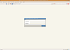
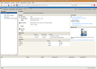
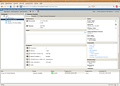
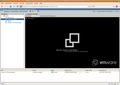
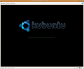

VMware Server 2
Archivierte Anleitung
Dieser Artikel wurde archiviert, da er - oder Teile daraus - nur noch unter einer älteren Ubuntu-Version nutzbar ist. Diese Anleitung wird vom Wiki-Team weder auf Richtigkeit überprüft noch anderweitig gepflegt. Zusätzlich wurde der Artikel für weitere Änderungen gesperrt.
Zum Verständnis dieses Artikels sind folgende Seiten hilfreich:
VMware Server 2 ist eine Software zur Server-Virtualisierung. Im Gegensatz zu seinen Brüdern VMware Workstation und VMware Player, die beide das Desktopsegment bedienen, ist VMware Server, wie der Name andeutet, für den Betrieb auf einem Server geeignet. Virtuelle Maschinen (VM) können auf einem leistungsstarken Wirtsystem laufen, während der Zugriff auch von schwachbrüstigeren Netzwerkteilnehmern erfolgen kann. VMware Server kann aber auch auf jedem Desktoprechner installiert und von da aus bedient werden.
Wie bei der kostenpflichtigen Workstation ist es möglich, VM zu erstellen und zu verändern. Wie der VMware Player ist der Server aber ebenfalls für den Privatgebrauch kostenlos gegen eine Registrierung erhältlich. Die Bedienung erfolgt seit Version 2 der Software über ein Webinterface, also einer Bedienoberfläche, die im Browser läuft, genannt Vix (VMware Infrastructure Web Access). Durch das Webinterface kann das Wirtsystem und die VM von einem beliebigen anderen Netzwerkkrechner verwaltet werden. Vix funktioniert aber u.U. nicht mit jedem Browser, mit Firefox funktioniert es, bei Opera gibt es Probleme. Über das Webinterface kann ein Browser-Plugin ("Remote Console Plugin") installiert werden, das es ermöglicht, die VM in einer "Remote Console" zu benutzen, wie es sie schon bei Version 1.0 des Servers gab.
Hinweis:
Das Produkt wurde bereits am 30.06.2011 abgekündigt (siehe Product Lifecycle Matrix  ). Der offizielle Nachfolger heißt VMware vSphere (oder ESXi).
). Der offizielle Nachfolger heißt VMware vSphere (oder ESXi).
Installation¶
Die Installation erfolgt manuell, ist aber sehr einfach.
Auf der Downloadseite des Herstellers muss man sich zunächst kostenlos registrieren und einige Angaben zur voraussichtlichen Nutzung der Software machen. Dann bekommt man einen Lizenzschlüssel für Windows und einen für Linux. Den für Linux braucht man noch während der Installation. Dann kann man sich die aktuelle Version des VMware Server 2 herunterladen. Dabei sollte man das *.tar.gz-Archiv entsprechend seiner Systemarchitektur (32/64 bit) wählen: VMware-server-2.0.0-xxx.architektur.tar.gz. Das Webinterface ist in diesem Paket enthalten.
Hinweis!
Fremdsoftware kann das System gefährden.
Da die Software auf den Serverbetrieb ausgerichtet ist, gibt es keine grafische Installation, sondern nur den Weg über ein Terminal [2]. Zunächst müssen die Pakete installiert werden[1]:
linux-headers-2.6.xx-YYYY (der verwendeten Kernelversion entsprechend)
build-essential
xinetd
sudo apt-get install linux-headers-`uname -r` build-essential xinetd
Danach wechselt man in das Verzeichnis, in welches das heruntergeladene *.tar.gz-Archiv abgespeichert wurde. Dort entpackt man das Archiv [3], wechselt dann in den neuen Ordner und führt dort mit Root-Rechten das Installationsskript aus. Hier die Zusammenfassung:
cd /pfad/zum/heruntergeladenen/archiv/ tar -xzvf VMware-server-2.0.0-xxx.i386.tar.gz cd vmware-server-distrib sudo ./vmware-install.pl
Das Installationsskript fordert dazu auf, die Lizenzbedingungen zu akzeptieren und stellt einige Fragen zur Installation und Konfiguration, bietet aber immer Standardvorgaben an. Die meisten davon kann man einfach bestätigen oder, wenn man weiß was man tut, abändern. Auch der Lizenzschlüssel muss angegeben werden. Das Webinterface Vix wird ebenfalls installiert.
Hinweis:
Als Loginuser ist der als Standard vorgeschlagene Root-User nicht verwendbar. Hier muss ein anderes Nutzerkonto, z.B. das eigene Login, angegeben werden. Sollte man diesen Hinweis zunächst übersehen, gibt es weiter unten einen Lösungsvorschlag. Der root-Benutzer sollte später über "Vmware Web Access" wieder eingetragen werden, da sonst der Autostart der VMs evtl. nicht funktioniert.
Sollte es eine neuere als die im oben genannten Paket enthaltene Version des Webinterfaces geben, so kann man diese neuere Version als Paket VMware-vix-a.b.c-xxx.architektur.tar.gz herunterladen und mit den oben genannten Schritten installieren.
Konfiguration & Kernelupgrade¶
Möchte man den Server zwischendurch neu konfigurieren oder nach einem Kernel-Upgrade die Kernelmodule neu erstellen, so wird dazu das Konfigurationsskript aufgerufen.
sudo vmware-config.pl
Dann werden zunächst alle VM und benötigten Dienste angehalten, dann die Kernelmodule überprüft und dann kann man die Netzwerkeinstellungen konfigurieren. Neben einer Deaktivierung der Netzwerkverbindung der VM gibt es folgende Möglichkeiten:
"Bridged" - In diesem Modus wird die VM in das Netzwerk des Wirts wie ein physischer Rechner eingebunden. Hat man z.B. einen Router, dann kann die VM genau wie ein physischer Rechner eine IP per DHCP beziehen. Sind am Wirt mehrere Netzwerkkarten vorhanden und sind beide in unterschiedlichen Netzwerken, kann man auswählen, in welches der beiden sich die VM verbinden soll.
"NAT" - Hierbei teilt sich die VM die IP-Adresse mit dem Wirt, siehe NAT
"Host-Only" - Bei diesem Modus sind VM und Wirt in einem eigenen Netzwerk verbunden.
Danach wird abgefragt, welche Ports benutzt werden sollen:
"port for remote connections" (Standard: 902) - Port den die Remote Console benutzt
"port for standard http connections" (Standard: 8222) - Port über den das Webinterface erreichbar ist
"port for secure http (https) connections" (Standard: 8333) - Port über den das Webinterface mit sicherer Verbindung erreichbar ist
Außerdem fragt das Skript, wer die Administrationsrechte erhalten soll. Normalerweise würde root die Administrationsrechte erhalten, da dieser bei Ubuntu standardmäßig nicht eingerichtet ist, sollte man die Adminrechte an sich oder einen anderen Benutzer übertragen. Der gewählte Admin kann später weitere Nutzer mit eingeschränkteren Rechten hinzufügen. Wurde bei der Installation kein Benutzername eingegeben, kann man sich zunächst nicht einloggen. Wie man nachträglich einen Benutzername angibt ist hier beschrieben.
Benutzung¶
Um das Webinterface zu starten öffnet man in einem Browser die URL
|  |
| Im Inventar ("Inventory") findet man das Wirtsystem und die Liste der installierten virtuellen Maschinen. In der Mitte stehen die detaillierte Informationen zur Inventarauswahl. |  |
| Man kann nun eine der installierten VM auswählen und mit dem grünen Abspielsymbol starten. Wenn man mit den entsprechenden Administrationsrechten ausgestattet ist, kann man auch neue VM erstellen. Dazu betätigt man das Feld "Create Virtual Machine" im Abschnitt "Commands". Es öffnet sich dann ein Dialogfeld, das die Konfigurationsschritte durchgeht. |  |
Hat man eine VM gestartet und möchte sie nun bedienen,  -klickt man irgendwo auf die schwarze Fläche im Registerreiter "Console". Es dauert u.U. einen Moment, deshalb nur einmal klicken, aber dann sollte sich das Remote Console Plugin öffnen. Bei Problemen mit dem Plugin sieht man auf dieser schwarzen Fläche eine Fehlermeldung und eventuell einen Lösungsvorschlag. -klickt man irgendwo auf die schwarze Fläche im Registerreiter "Console". Es dauert u.U. einen Moment, deshalb nur einmal klicken, aber dann sollte sich das Remote Console Plugin öffnen. Bei Problemen mit dem Plugin sieht man auf dieser schwarzen Fläche eine Fehlermeldung und eventuell einen Lösungsvorschlag.
|  |
| Die Bedienung der Remote Console ist nahezu kongruent zur Bedienung des VMware Player. Eine ausführliche Anleitung findet sich im entsprechenden Abschnitt des Artikels. |  |
Weitere Möglichkeiten des Webinterfaces sind:
| |
Deinstallation¶
Möchte man VMware Server 2 wieder deinstallieren, so führt man das mitgelieferte Deinstallationsskript aus.
sudo vmware-uninstall.pl
Problemlösungen¶
Probleme bei der Installation¶
Es kann vorkommen, dass das Modul während der Installation nicht erstellt werden kann. Eine Lösung bietet ein Skript, welches hier heruntergeladen werden kann. Damit ist auch eine Installation unter Ubuntu Lucid Lynx 10.04 möglich, dafür benötigt man lediglich die Path-Datei raducotescu-vmware-server-linux-2.6.3x-kernel-f271f27.tar.gz
Nach Browserupdate funktioniert das Remote Console Plugin nicht¶
Es kann unter Umständen bei einem Update des Browsers passieren, dass das "Remote Console Plugin" nicht mehr funktioniert. Das Webinterface bietet dann an, es neu zu installieren. Unter Umständen hilft das aber nicht, wenn die neueste Version inkompatibel zum Browserupdate ist. Im Falle des Firefox kann ein weiteres Browserplugin, die Nightly Tester Tools weiterhelfen. Diese Werkzeuge können dem Plugin eine ältere Firefox-Version vorgaukeln, wodurch sich das Webinterface zur Mitarbeit bewegen lässt.
Eine andere Option wäre die Nutzung einer portablen Version von Firefox, die nur dem einen Zweck dient. Um eine Portable-Version zu erstellen, kann man dieses Skript nutzen, wobei die wget-Zeile
folgendermaßen angepasst werden muss:
wget "http://releases.mozilla.org/pub/mozilla.org/${application}/releases/${version}/linux-i686/${language}/${file}"Als Version empfehlt sich zur Zeit 3.5.11. (ftp://ftp.mozilla.org/pub/firefox/releases/3.5.11)
Tastaturprobleme¶
Es kann vorkommen, dass im VM-Fenster bestimmte Tasten bzw. Tastaturkombinationen nicht funktionieren (z.B. Strg + Alt + Entf ). Um dies zu beheben, erstelle/bearbeite man im Homeverzeichnis die Datei .vmware/config[4] und fügt folgende Zeile ein:
xkeymap.nokeycodeMap = true
Eine weitere Möglichkeit ist das Benutzen der Kombination Strg + Alt + Entf mit der Entf-Taste auf dem _Ziffernblock! (Num muss dafür in der Gastmaschine aus sein).
Seit Ubuntu 8.10 (Intrepid Ibex) tritt ein Fehler auf, der unabhängig vom Gast-OS dazu führt, dass einzelne Tasten der Tastatur nicht bzw. falsch erkannt werden. Probleme können insbesondere mit den Pfeiltasten oder dem Rückstrich (\) auftreten. Sollte die oben genannte Lösung keine Besserung bringen, schafft das Anlegen der Datei ~/.vmware/config mit folgendem Inhalt und anschließender Neustart des VMware-Servers Abhilfe:
xkeymap.keycode.108 = 0x138 # Alt_R xkeymap.keycode.106 = 0x135 # KP_Divide xkeymap.keycode.104 = 0x11c # KP_Enter xkeymap.keycode.111 = 0x148 # Up xkeymap.keycode.116 = 0x150 # Down xkeymap.keycode.113 = 0x14b # Left xkeymap.keycode.114 = 0x14d # Right xkeymap.keycode.105 = 0x11d # Control_R xkeymap.keycode.118 = 0x152 # Insert xkeymap.keycode.119 = 0x153 # Delete xkeymap.keycode.110 = 0x147 # Home xkeymap.keycode.115 = 0x14f # End xkeymap.keycode.112 = 0x149 # Prior xkeymap.keycode.117 = 0x151 # Next xkeymap.keycode.78 = 0x46 # Scroll_Lock xkeymap.keycode.127 = 0x100 # Pause xkeymap.keycode.133 = 0x15b # Meta_L xkeymap.keycode.134 = 0x15c # Meta_R xkeymap.keycode.135 = 0x15d # Menu
siehe 289098
Nachträglich Login von root auf Benutzer ändern¶
Das neue Webinterface verlangt standardmäßig root als Login. Wurde die Angabe eines geeigneten Benutzernamen bei der Installation versäumt, lässt sich dies nachträglich umstellen. Mittels Editor mit root-Rechten in der Datei /etc/vmware/hostd/authorization.xml den ACEDataUser von root auf den gewünschten (meist eigenen) Benutzername ändern. Nach der Änderung VMware neu starten:
sudo /etc/init.d/vmware restart
Probleme beim Autoshutdown¶
Sollte beim herunterfahren des Hosts gewünscht werden, dass die virtuellen Maschinen ordnungsgemäß heruntergefahren werden, sollte dies mit sudo /etc/init.d/vmware stop überprüft werden. Sollte dabei die Meldung kommen, dass ein Beenden der Dienste nicht möglich ist, hilft vielleicht diese Beschreinung auf ubuntuforums.org weiter.
Konfiguration des vsock-Modul schlägt fehl¶
Bei der Konfiguration des vsock-Modules tritt ein Fehler auf und man wird dazu aufgefordert, die Ubuntu-CD einzulegen. Die Fehlermeldung entspricht in etwa dem folgenden Beispiel.
None of the pre-built vsock modules for VMware Server is suitable for your running kernel. Do you want this program to try to build the vsock module for your system (you need to have a C compiler installed on your system)? [yes] Extracting the sources of the vsock module. Building the vsock module. Using 2.6.x kernel build system. make: Entering directory `/tmp/vmware-config0/vsock-only' make -C /lib/modules/2.6.27-7-generic/build/include/.. SUBDIRS=$PWD SRCROOT=$PWD/. modules make[1]: Entering directory `/usr/src/linux-headers-2.6.27-7-generic' CC [M] /tmp/vmware-config0/vsock-only/linux/af_vsock.o CC [M] /tmp/vmware-config0/vsock-only/linux/driverLog.o CC [M] /tmp/vmware-config0/vsock-only/linux/util.o /tmp/vmware-config0/vsock-only/linux/util.c: In function ‘VSockVmciLogPkt’: /tmp/vmware-config0/vsock-only/linux/util.c:157: warning: format not a string literal and no format arguments CC [M] /tmp/vmware-config0/vsock-only/linux/vsockAddr.o LD [M] /tmp/vmware-config0/vsock-only/vsock.o Building modules, stage 2. MODPOST 1 modules WARNING: "VMCIDatagram_CreateHnd" [/tmp/vmware-config0/vsock-only/vsock.ko] undefined! WARNING: "VMCIDatagram_DestroyHnd" [/tmp/vmware-config0/vsock-only/vsock.ko] undefined! WARNING: "VMCI_GetContextID" [/tmp/vmware-config0/vsock-only/vsock.ko] undefined! WARNING: "VMCIDatagram_Send" [/tmp/vmware-config0/vsock-only/vsock.ko] undefined! CC /tmp/vmware-config0/vsock-only/vsock.mod.o LD [M] /tmp/vmware-config0/vsock-only/vsock.ko make[1]: Leaving directory `/usr/src/linux-headers-2.6.27-7-generic' cp -f vsock.ko ./../vsock.o make: Leaving directory `/tmp/vmware-config0/vsock-only' Unable to make a vsock module that can be loaded in the running kernel: insmod: error inserting '/tmp/vmware-config0/vsock.o': -1 Unknown symbol in module There is probably a slight difference in the kernel configuration between the set of C header files you specified and your running kernel. You may want to rebuild a kernel based on that directory, or specify another directory. The VM communication interface socket family is used in conjunction with the VM communication interface to provide a new communication path among guests and host. The rest of this software provided by VMware Server is designed to work independently of this feature. If you wish to have the VSOCK feature you can install the driver by running vmware-config.pl again after making sure that gcc, binutils, make and the kernel sources for your running kernel are installed on your machine. These packages are available on your distribution's installation CD. [ Press the Enter key to continue.]
Einen Lösungsvorschlag kann man im englischsprachigen Ubuntuforum einsehen und behebt dieses Problem, indem man die Installation an diesem Punkt einfach weiterführt und anschließend ein Patch ausführt.
Dazu folgenden Code in einer Textdatei names vmware-patch speichern.
--- /usr/bin/vmware-config.pl.orig 2008-11-28 12:06:35.641054086 +0100
+++ /usr/bin/vmware-config.pl 2008-11-28 12:30:38.593304082 +0100
@@ -4121,6 +4121,11 @@
return 'no';
}
+ if ($name eq 'vsock') {
+ print wrap("VMWare config patch VSOCK!\n");
+ system(shell_string($gHelper{'mv'}) . ' -vi ' . shell_string($build_dir . '/../Module.symvers') . ' ' . shell_string($build_dir . '/vsock-only/' ));
+ }
+
print wrap('Building the ' . $name . ' module.' . "\n\n", 0);
if (system(shell_string($gHelper{'make'}) . ' -C '
. shell_string($build_dir . '/' . $name . '-only')
@@ -4143,6 +4148,10 @@
if (try_module($name, $build_dir . '/' . $name . '.o', 0, 1)) {
print wrap('The ' . $name . ' module loads perfectly into the running kernel.'
. "\n\n", 0);
+ if ($name eq 'vmci') {
+ print wrap("VMWare config patch VMCI!\n");
+ system(shell_string($gHelper{'cp'}) . ' -vi ' . shell_string($build_dir.'/vmci-only/Module.symvers') . ' ' . shell_string($build_dir . '/../'));
+ }
remove_tmp_dir($build_dir);
return 'yes';
}Und ausführen:
sudo patch -p0 < vmware-patch sudo vmware-config.pl
Mit lsmod | grep v solten folgende Module erscheinen. (Die 5-stelligen Zahlenkombinationen können variieren.)
vsock 31536 0 vmci 65832 1 vsock vmmon 85968 0 [vnet]
Diese Lösung funktioniert bei folgenden Quellcodeversionen:
Build 122956 - (Stand Januar 2009)
Build 156745 - (Stand Mai 2009)
Leere Seite beim Aufrufen des Webinterfaces (loading...)¶
Lösung 1¶
In die /etc/host auf dem Server die Zeile für den Rechner eintragen, von dem aus auf den Server zugegriffen wird. Also z.B.:
192.168.0.2 dein-computername.domain dein-computername
Das Beispiel setzt voraus, dass vom Rechner mit dem Namen dein-computer.domain und der IP Adresse 192.168.0.2 auf den Server zugegriffen werden soll.
Wird vom gleichen Rechner aus auf den Server zugegriffen, kann auch Folgendes helfen:
127.0.0.1 dein-computername
Näheres unter hosts.
Lösung 2¶
Die Konfiguration nochmals starten,
sudo vmware-config.pl
und anstelle der Ports 8222 und 8333 die Standard-Ports 80 und 443 benutzen.
Original-Thread im englischen Vmware-Forum
Lösung 3¶
Einfach die Managment-Oberfläche erneut starten
sudo /etc/init.d/vmware-mgmt restart
dabei werden laufende VM's nicht neugestartet bzw. beendet.
Lösung 4¶
Wer Mozilla Firefox benutzt muss SSL2 Aktivieren. Einfach in die Adresszeile:
about:config
eingeben und mit ⏎ bestätigen.
Dann nach dem Eintrag:
security.enable_ssl2
suchen und mit einem Doppelklick auf true setzen.
Links¶
http://www.vmware.com/de/
 - Webseite des Herstellers
- Webseite des Herstellershttp://vmware-forum.de/
- Deutsches Vmware-Forum http://www.vmware.com/appliances/
- Fertige VM herunterladenhttp://cdimage.ubuntu.com/vmware/
- Virtuelles (K)Ubuntu herunterladenhttp://easyvmx.com/
- VM erstellen und herunterladenhttp://www.libe.net/themen/VMWare_auf_Ubuntu.php
- sehr ausführliche Anleitung von VMWarehttp://hmontoliu.blogspot.com/2010/04/installing-vmware-server-202-in-ubuntu.html
VMWare Server 2.0 Fehler 2 damit klappt die Installation
- Erstellt mit Inyoka
-
 2004 – 2017 ubuntuusers.de • Einige Rechte vorbehalten
2004 – 2017 ubuntuusers.de • Einige Rechte vorbehalten
Lizenz • Kontakt • Datenschutz • Impressum • Serverstatus -
Serverhousing gespendet von